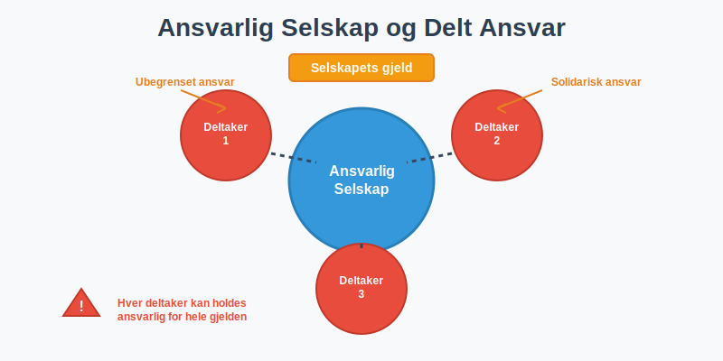
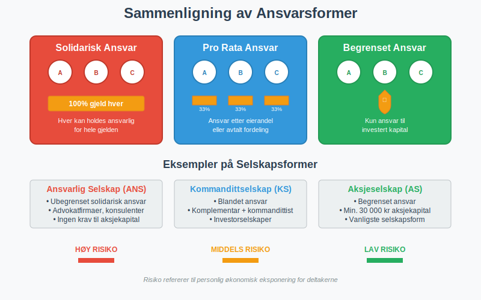
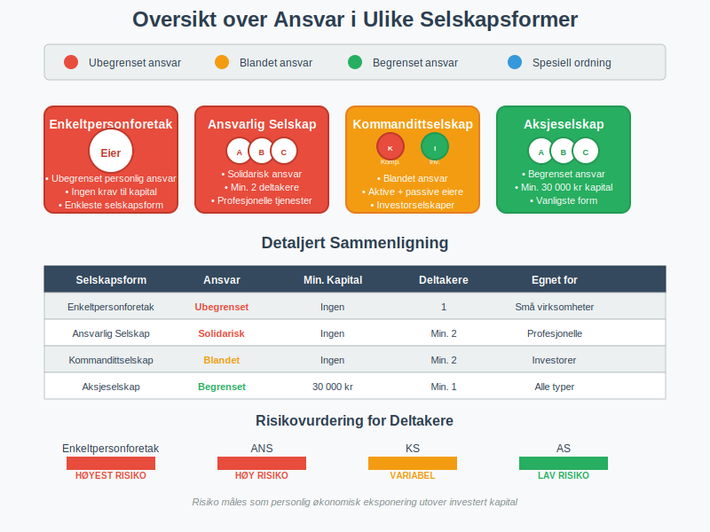
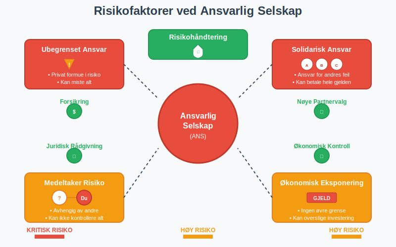
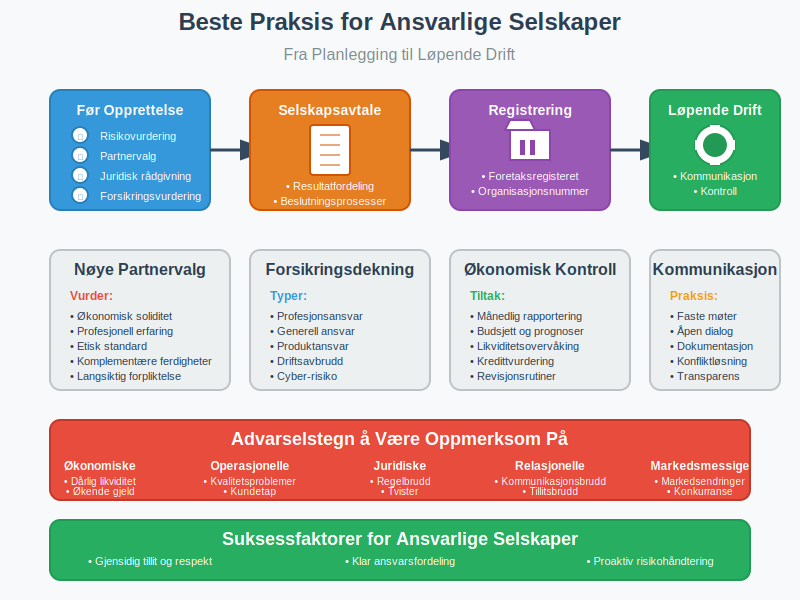
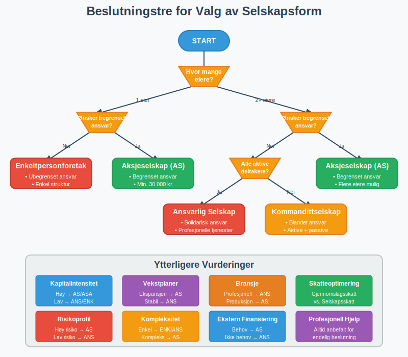

Et ansvarlig selskap (ANS), også kalt DA (Delt Ansvar), er en foretaksform hvor to eller flere deltakere driver virksomhet sammen med ubegrenset solidarisk ansvar. Dette betyr at hver deltaker kan holdes ansvarlig for hele selskapets gjeld og forpliktelser, ikke bare sin egen andel.

Hva er et Ansvarlig Selskap?
Et ansvarlig selskap skiller seg fundamentalt fra et aksjeselskap ved at deltakerne har ubegrenset personlig ansvar. Selskapsformen reguleres av selskapsloven og er vanlig innen profesjonelle tjenester som advokatfirmaer, regnskapsfirmaer og konsulentselskaper.
For en komplett oversikt over ansvarlig selskap, inkludert regnskapsmessige forhold, skattekonsekvenser og praktiske råd, se vår utfyllende guide om Ansvarlig Selskap (ANS).
Kjennetegn ved Ansvarlig Selskap
Ubegrenset Solidarisk Ansvar
Den viktigste egenskapen ved et ANS er at alle deltakere har ubegrenset solidarisk ansvar. Dette innebærer:
- Hver deltaker kan holdes ansvarlig for hele selskapets gjeld
- Kreditorene kan kreve full betaling fra hvilken som helst deltaker
- Deltakernes private formue kan tas i bruk for å dekke selskapets forpliktelser
- Ansvaret gjelder også for medeltakernes handlinger på vegne av selskapet
Minimum To Deltakere
- Et ANS må ha minimum to deltakere
- Deltakerne kan være både fysiske og juridiske personer
- Alle deltakere har rett til å representere selskapet utad
Ingen Krav til Aksjekapital
I motsetning til aksjeselskaper har ANS ingen krav til minimum kapitalinnskudd.

Delt Ansvar - Ulike Former for Ansvar
Begrepet delt ansvar refererer til hvordan ansvar fordeles mellom deltakerne i et selskap. Det finnes flere former for ansvar i norsk selskapsrett:
Solidarisk Ansvar
Ved solidarisk ansvar kan hver deltaker holdes ansvarlig for hele gjelden:
- Kreditorer kan kreve full betaling fra én deltaker
- Den som betaler kan senere kreve regress fra de andre deltakerne
- Vanlig i ansvarlige selskaper og enkelte andre selskapsformer
Pro Rata Ansvar
Ved pro rata ansvar er hver deltaker kun ansvarlig for sin andel:
- Ansvaret fordeles etter eierandel eller avtalt fordeling
- Mindre vanlig i norske selskapsformer
- Krever spesifikk avtale mellom partene
Begrenset Ansvar
Ved begrenset ansvar er deltakernes ansvar begrenset til deres investering:
- Vanlig i aksjeselskaper og allmennaksjeselskaper
- Beskytter deltakernes private formue
- Krever minimum kapitalinnskudd
| Selskapsform | Ansvarstype | Minimum Kapital | Antall Deltakere |
|---|---|---|---|
| Ansvarlig Selskap (ANS) | Ubegrenset solidarisk | Ingen | Minimum 2 |
| Aksjeselskap (AS) | Begrenset | 30 000 kr | Minimum 1 |
| Kommandittselskap (KS) | Blandet | Ingen | Minimum 2 |
| Enkeltpersonforetak | Ubegrenset personlig | Ingen | 1 |

Fordeler med Ansvarlig Selskap
Enkel Opprettelse og Drift
- Ingen kapitalinnskudd: Krever ikke minimum aksjekapital som AS
- Fleksibel struktur: Færre formelle krav enn aksjeselskaper
- Rask oppstart: Enklere registreringsprosess
Skattemessige Fordeler
- Gjennomslagsskatt: Overskudd beskattes direkte hos deltakerne
- Fradragsrett: Underskudd kan trekkes fra i deltakernes øvrige inntekt
- Fleksibel resultatfordeling: Kan avtale annen fordeling enn eierandeler
Kredittilgang
- Personlig ansvar: Kan gi bedre kredittilgang da deltakernes private formue står som sikkerhet
- Soliditet: Kreditorene har større sikkerhet gjennom det ubegrensede ansvaret
Ulemper og Risikoer
Ubegrenset Personlig Ansvar
Den største ulempen er det ubegrensede personlige ansvaret:
- Deltakernes private formue står som sikkerhet
- Risiko for personlig konkurs ved store tap
- Ansvar for medeltakernes handlinger
Solidarisk Ansvar
- Full ansvarsbyrde: Kan måtte betale hele selskapets gjeld alene
- Avhengighet av medeltakere: Risiko knyttet til andre deltakeres økonomiske situasjon
- Regresskrav: Må kreve tilbakebetaling fra medeltakere i etterkant
Begrenset Fleksibilitet
- Enstemmighet: Viktige beslutninger krever ofte enstemmighet
- Uttreden: Komplisert å tre ut av selskapet
- Overdragelse: Vanskelig å overdra eierandeler

Kommandittselskap - En Hybrid
Kommandittselskap (KS) er en variant hvor ansvaret er delt mellom to typer deltakere:
Komplementarer
- Har ubegrenset solidarisk ansvar
- Kan representere selskapet utad
- Ansvarlig for den daglige driften
Kommandittister
- Har begrenset ansvar til sitt kapitalinnskudd
- Kan ikke delta i den daglige driften
- Fungerer som passive investorer
| Deltaker | Ansvar | Driftsansvar | Representasjonsrett |
|---|---|---|---|
| Komplementar | Ubegrenset solidarisk | Ja | Ja |
| Kommandittist | Begrenset til innskudd | Nei | Nei |
Praktiske Råd for Ansvarlige Selskaper
Før Opprettelse
- Vurder risiko: Er du komfortabel med ubegrenset personlig ansvar?
- Velg medeltakere nøye: Du blir ansvarlig for deres handlinger
- Få juridisk rådgivning: Konsulter advokat om selskapsavtale
- Vurder forsikring: Profesjonsansvarsforsikring kan redusere risiko
Selskapsavtale
En god selskapsavtale bør regulere:
- Resultatfordeling: Hvordan overskudd og underskudd fordeles
- Beslutningsprosesser: Hvem som kan ta hvilke beslutninger
- Uttreden: Prosedyrer for å forlate selskapet
- Oppløsning: Hvordan selskapet skal avvikles
Løpende Drift
- Regelmessig kommunikasjon: Hold medeltakere informert om selskapets situasjon
- Økonomisk kontroll: Følg nøye med på selskapets økonomi
- Forsikring: Vurder løpende behovet for forsikringsdekning
- Juridisk oppfølging: Hold selskapsavtalen oppdatert

Ansvar i Ulike Bransjer
Profesjonelle Tjenester
Ansvarlige selskaper er vanlige innen:
- Advokatfirmaer: Tradisjonelt organisert som ANS
- Regnskapsfirmaer: Mange velger ANS for fleksibilitet
- Konsulentselskaper: Vanlig for mindre konsulentgrupper
- Arkitektfirmaer: Profesjonsansvar gjør ANS naturlig
Når ANS Ikke Egner Seg
ANS er mindre egnet for:
- Kapitalintensive virksomheter: Høy risiko gjør begrenset ansvar ønskelig
- Mange eiere: Solidarisk ansvar blir komplisert med mange deltakere
- Ekstern finansiering: Investorer foretrekker ofte begrenset ansvar
Ansvarsbegrensning og Forsikring
Profesjonsansvarsforsikring
- Dekker profesjonelle feil: Beskytter mot krav fra klienter
- Obligatorisk i enkelte bransjer: Påkrevd for advokater og revisorer
- Reduserer personlig risiko: Kan dekke store erstatningskrav
Generell Ansvarsforsikring
- Dekker tredjepartskrav: Beskytter mot skader på andre
- Produktansvar: Viktig for selskaper som produserer varer
- Driftsansvar: Dekker skader i forbindelse med virksomheten
Begrensninger i Forsikring
- Selvrisiko: Deltakerne må dekke beløp under selvrisiko
- Eksklusjoner: Visse typer skader dekkes ikke
- Maksimum dekning: Forsikringen har øvre grense
Sammenligning med Andre Selskapsformer
ANS vs. Aksjeselskap
| Aspekt | Ansvarlig Selskap | Aksjeselskap |
|---|---|---|
| Ansvar | Ubegrenset solidarisk | Begrenset til aksjekapital |
| Minimum kapital | Ingen | 30 000 kr |
| Skatt | Gjennomslagsskatt | Selskapsskatt + utbytteskatt |
| Formaliteter | Færre krav | Strenge krav til regnskap |
| Fleksibilitet | Høy | Regulert av aksjeloven |
ANS vs. Enkeltpersonforetak
| Aspekt | Ansvarlig Selskap | Enkeltpersonforetak |
|---|---|---|
| Antall eiere | Minimum 2 | 1 |
| Ansvar | Solidarisk mellom deltakere | Personlig for eier |
| Kompleksitet | Middels | Lav |
| Skattefordeler | Fleksibel fordeling | Begrenset |

Juridiske Aspekter
Selskapsloven
Ansvarlige selskaper reguleres av selskapsloven kapittel 2:
- Regler for opprettelse og registrering
- Deltakernes rettigheter og plikter
- Representasjon og beslutningsprosesser
- Oppløsning og avvikling
Registrering
- Foretaksregisteret: Må registreres i Brønnøysundregistrene
- Selskapsavtale: Må vedlegges ved registrering
- Prokura: Kan gi andre rett til å representere selskapet
Regnskapsplikt
ANS har samme regnskapsplikt som andre selskaper:
- Må føre regnskap etter regnskapsloven
- Årsregnskap må leveres til myndighetene
- Revisjon kan være påkrevd avhengig av størrelse
Internasjonale Perspektiver
Tilsvarende Selskapsformer
- Partnership (USA/UK): Tilsvarende ubegrenset ansvar
- Société en nom collectif (Frankrike): Fransk variant av ANS
- Offene Handelsgesellschaft (Tyskland): Tysk ansvarlig selskap
Limited Liability Partnership (LLP)
- Begrenset ansvar: Beskytter mot medeltakernes feil
- Profesjonsansvar: Beholder ansvar for egne handlinger
- Ikke tilgjengelig i Norge: Må bruke andre selskapsformer
Fremtidige Utviklingstrekk
Digitalisering
- Elektronisk signering: Forenkler selskapsavtaler
- Digital rapportering: Automatisert regnskapsrapportering
- Online registrering: Enklere opprettelsesprosess
Regulatoriske Endringer
- EU-harmonisering: Kan påvirke norske regler
- Profesjonsregulering: Endringer i bransjespecifikke krav
- Skattelovgivning: Kan endre skattemessige fordeler
Konklusjon
Ansvarlig selskap med delt ansvar er en selskapsform som egner seg godt for profesjonelle tjenester og mindre virksomheter hvor deltakerne ønsker fleksibilitet og er komfortable med personlig ansvar. Det ubegrensede solidariske ansvaret krever nøye vurdering av risiko og valg av medeltakere.
Når ANS er Riktig Valg
- Profesjonelle tjenester med lav kapitalintensitet
- Få deltakere som kjenner hverandre godt
- Ønske om skattemessig fleksibilitet
- Behov for rask oppstart uten kapitalinnskudd
Når Andre Selskapsformer Bør Vurderes
- Høy risiko eller kapitalintensive virksomheter
- Mange eiere eller eksterne investorer
- Ønske om begrenset personlig ansvar
- Planer om børsnotering eller salg
Uansett valg av selskapsform er det viktig å få profesjonell rådgivning og utarbeide en grundig selskapsavtale som regulerer forholdet mellom deltakerne og deres ansvar.
Relaterte Begreper
For å forstå ansvarlig selskap og delt ansvar fullt ut, bør du også sette deg inn i:
- Enkeltpersonforetak - Den enkleste selskapsformen med ubegrenset personlig ansvar
- Aksjeselskap - Selskapsform med begrenset ansvar
- Aksjeloven - Regulerer aksjeselskaper
- Aksjekapital - Minimum kapital i aksjeselskaper
- Regnskap - Regnskapsplikt for alle selskaper
- Aksjonærlån - Finansieringsalternativer i aksjeselskaper
Ansvarlig selskap representerer en viktig selskapsform i norsk næringsliv som balanserer fleksibilitet med ansvar, og som krever grundig forståelse av både muligheter og risikoer.